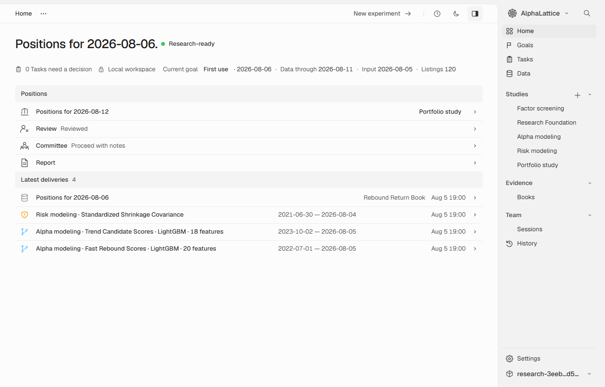
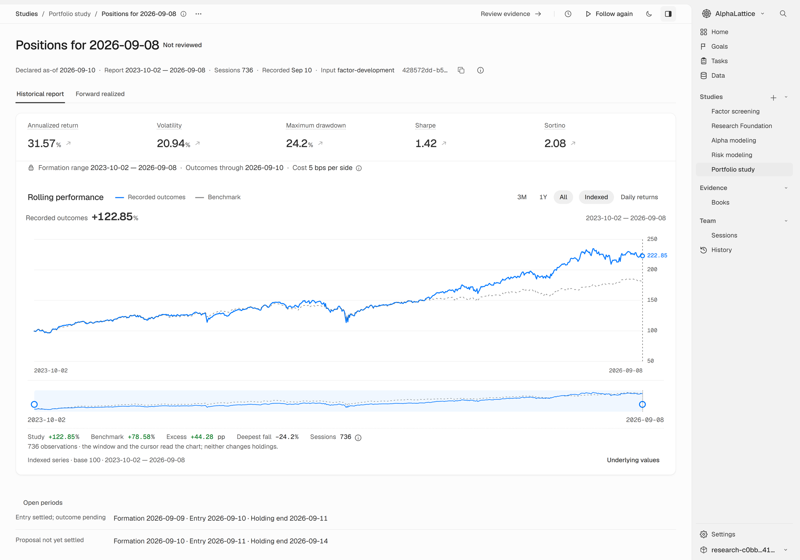
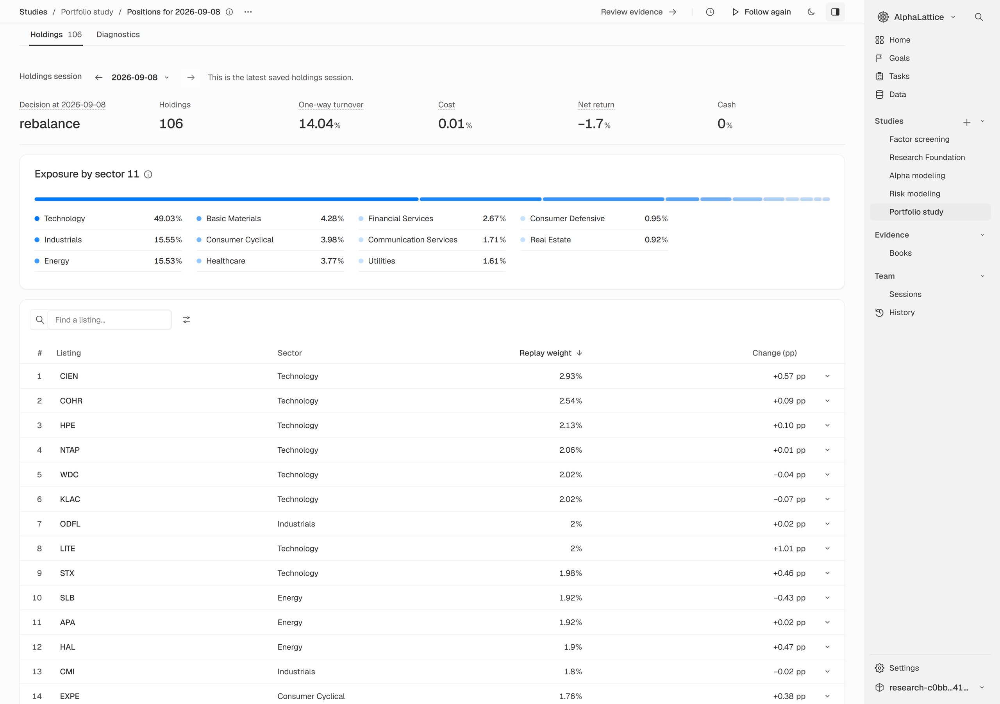
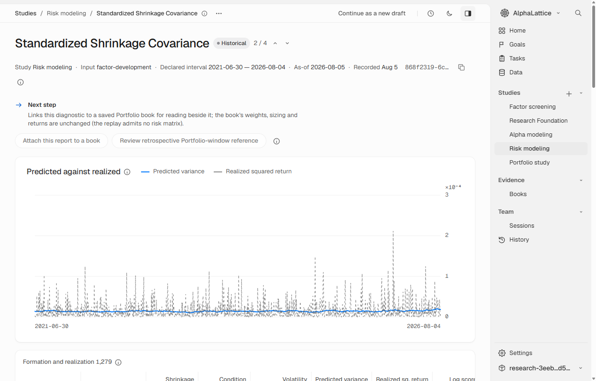
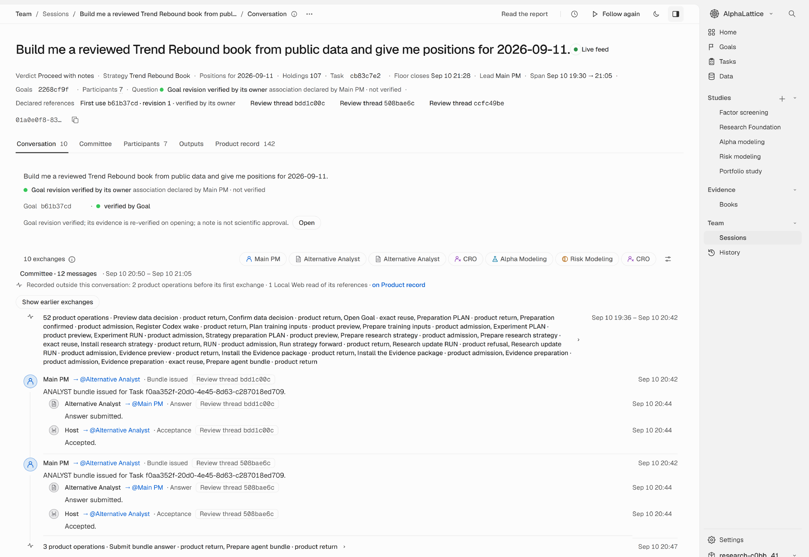

Check the sources
Read the passages used in the review, their information cutoffs and the review’s coverage. Evidence Analysts work from material available at the cutoff, and the CRO assesses their findings.
Give Claude Code or Codex one sentence. AlphaLattice prepares public market data, runs the studies and builds a research portfolio for the date you choose. Follow the work in your browser, inspect the inputs and read the committee’s review.

Example workspace using synthetic data.
View full image
Historical replay of Trend Rebound Book.
View full image
Historical sector exposure and replay weights.
View full image
A saved risk study, using synthetic data.
View full image
Evidence review from an earlier recorded run.
View full imageOpen the Workbench in your coding app’s browser to see the positions, inspect the studies and read the review. See the README example
Open a new folder in Claude Code or Codex and send the message below. Your agent handles setup and research, asking you for decisions such as network access.
Use https://github.com/xinglin-li/alphalattice to build me a reviewed Trend Rebound strategy from public data and show its dated research positions; open the Workbench in your built-in browser so I can follow it.
It prepares public market data for about 470 US large caps from the S&P 500, Nasdaq-100 and Dow.
It fits the strategy’s models and runs its risk studies.
It produces positions for your requested date, using only information available before that date’s cutoff.
Evidence Analyst agents read SEC filings. The chief risk officer (CRO) assesses their findings.
A committee with four roles—PM, Alpha, Risk and CRO—records its objections and rulings. It does not change the calculated numbers.
Read the source passages, the committee’s objections and the final report alongside the portfolio.
Read the passages used in the review, their information cutoffs and the review’s coverage. Evidence Analysts work from material available at the cutoff, and the CRO assesses their findings.
The portfolio manager (PM), Alpha, Risk and CRO discuss the result. The PM rules on their challenges. The committee can decline to endorse it, and its suggestions and dissent stay in the report.
The report brings together the positions, risk assessment, citations, review coverage and committee’s views. It also keeps the reservations alongside the result.
The worked example states which filings the review covered and where the evidence was limited.
Read the worked exampleMeasured on Windows · 0.2.2 · Claude Code + Haiku
Times from that workload, not a prediction for your machine. These are not new measurements for 0.2.3.
Read the measurements and limitsAlphaLattice is early. It produces research positions, and you make the decisions. Its historical universe uses today’s index membership, so the research has survivorship bias; the report states that limitation.
Release notes